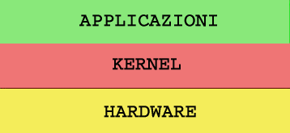
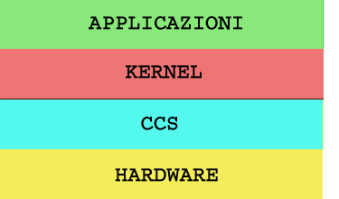

Come è fatto un os
In questo capitolo cercheremo di dare una definizione di os, cercheremo di capire da quali parti è composto e poi cercheremo di definire le caratteristiche che deve avere il nostro os.
Anche se tutti noi abbiamo sempre a che fare con un os, è molto difficile definirlo, perchè a seconda di come lo utilizziamo, soggetivamente, ne daremo diverse definizioni: una segretaria ad esempio ci dirà che un sistema operativo è quella cosa che gli permette di salvare i documenti e di lavorare con un word processor. Un bambino ci dirà che serve per farlo giocare, etc...
Possiamo definire un os come una macchina virtuale e come un gestore di risorse. Una macchina virtuale perchè si occupa di definire un interfaccia unica e indipendente dall'hardware, in modo da sgravare il programmatore dal gestire il funzionamento dell'hardware. Gestore di risorse perchè si occupa di gestire le varie periferiche del nostro pc e ci permette un interazione con loro.
Pertanto possiamo disegnare questo primo schema:

I due livelli sopra l'hardware sono l'os (kernel + applicazioni). Il kernel è formato da molte parti. Bisogna distinguere tra due tipi possibili di kernel: monolitico e microkernel. Esistono anche altri tipi di strutturazione del kernel, ma sono di fatto modelli teorici con scarsa applicabilità.
I kernel monolitici al giorno d'oggi vengono un pò snobbati ma sono di fatto quelli più usati sopratutto nei progetti amatoriali. Un kernel monolitico contiene al suo interno TUTTO quello che deve avere un kernel. Per definizione tutti i componenti sono molto legati tra loro. E' molto facile aggiungere driver, ma alla fine la pesantezza e la complessità renderanno impossibile ulteriori sviluppi.
Una variante dei kernel monolitici sono i kernel modulari, che pur restando monolitici permettono di caricare moduli dinamicamente. Questo meccanismo è molto ingegnoso perché permette di conservare la facilità di sviluppo propria dei kernel monolitici, ma anche di mantenere efficente l'occupazione di memoria e di ridurre la complessità.
I microkernel sono quelli più apprezzati perché permettono di rendere facilmente espandibile, modificabile e personalizzabile il kernel. Il meccanismo si basa sul concetto che il kernel si occupa di gestire le operazioni fondamentali dell'os mentre la gestione di tutto il resto, memoria, net, fs, hardware, è demandata a dei server che sono totalmente indipendenti dal kernel. I vantaggi sono evidenti, ma la realizzazione si complica sia per la gestione che per la lentezza dello switch tra i vari server.
Cerchiamo ora di definire le caratteristiche che dovrà avere il nostro os:
- Essere facilmente portabile su altre piattaforme
- Mantenere un rapporto semplicità di sviluppo/efficenza tendente ad 1
- Poter funzionare sulla maggior parte dell'hardware esistente
Inizialmente ci concentreremo sullo sviluppo su piattaforme IA32, ma predisporremo in modo che sia possibile aggiungere altre piattaforme facilmente.
La mia idea era quella di creare un piccolo kernellino che configurasse tutti quegli aspetti dipendenti dalla piattaforma e che fornisse delle funzioni indipendenti usabili dal kernel vero e proprio. Ho poi chiamato questo kernellino col nome di ccs (sistema configurazione cpu). Il ccs viene caricato dal bootloader, si occupa di configurare tutti gli aspetti specifici della cpu e fornisce un interfaccia unica per il kernel vero e proprio che gestisce tutto l'hardware. Un esempio: il ccs fornisce una funzione per fare il task switch e poi il kernel fornisce le politiche di schedulazione che sono indipendenti dal processo che esegue il task switch e da come esso viene realizzato.

Definiremo in seguito con precisione le caratteristiche del ccs e del kernel. La prima cosa da fare ora e decidere qualche altro piccolo dettaglio, vedere gli strumenti che ci servono e iniziare a scrivere il bootloader.